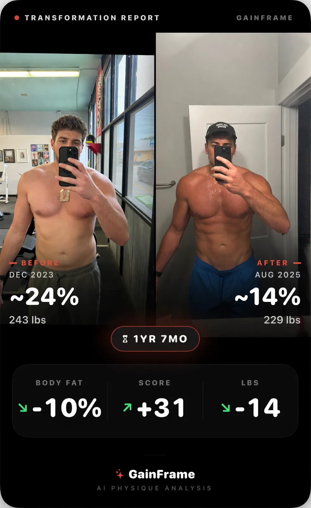

Which App Has the Best Before-and-After Transformations for Men?
Most apps just stitch two sloppy selfies together. A real transformation requires exact alignment, clear poses, and hard data proving your progress.

You work hard for six months. You stick to the diet, push the volume, and finally decide to compare your progress. You pull up a photo from day one, put it next to today's photo in a generic collage app, and realize they look completely different. The angle is off, the lighting is wrong, and the framing makes it impossible to see the actual muscle gain.
That is the reality of trying to track a male physique transformation with a standard camera roll.
The problem isn't your progress. The problem is the tool. Most generic fitness apps and photo stitchers fail at showing impressive male transformations because they don't solve the core issues: alignment, pose organization, and data extraction.
If you want to know which app has the best before-and-after transformations for men, you have to look at what actually goes into creating a compelling comparison card.
Why the Standard Camera Roll Fails
Your camera roll is a mess of screenshots, pet photos, and gym selfies. When you try to find that one specific front-relaxed pose from three months ago, it's buried. Even worse, generic collage apps don't analyze your pictures. They just place them side-by-side.
They don't pull out useful stats like body fat percentage or muscle breakdown. They don't have built-in tools to easily compare pictures and adjust the images so they line up perfectly. You are left guessing if your shoulders actually got wider or if you just held the phone closer to the mirror.
A true transformation needs context. A photo alone is subjective, but a photo with data attached becomes objective evidence.
How GainFrame Builds the Perfect Before-and-After

GainFrame approaches transformations differently. Instead of just stitching photos together, it treats your physique as a dataset. When you import historical pictures, they are categorized based on specific poses you define. This means your front double biceps are never compared to a side relaxed pose.
Everything is organized and easy to navigate. But organization is only the baseline. What separates a standard comparison from a high-tier transformation is the analysis layer. Each photo you upload gets fully analyzed with a detailed breakdown.
The app generates beautiful before-and-after share cards that are fully rendered. When you want to post your progress on social media, you aren't just posting two photos. You are posting your stats, your timeline, and the verified visual evidence of your hard work alongside the images.
When you share a GainFrame transformation card, you aren't just showing what you look like. You are proving what you built.
Alignment Tools and Future Predictions

The most frustrating part of tracking progress is getting the framing right. GainFrame solves this with built-in alignment tools. When you compare two photos, the app gives you the adjustments needed to make the images line up perfectly. This eliminates the "is it lighting or is it muscle?" debate.
But the most powerful feature for motivation isn't looking at the past—it's looking at the future. GainFrame includes a Future Physique feature that allows you to generate a visualization of what you would look like if you stuck to specific workout plans.
Instead of hoping your current routine works, you can visually project the outcome. It bridges the gap between today's effort and tomorrow's result.
How to Standardize Your Transformation Photos
If you want the best possible before-and-after results, you need to standardize your input. Here is the framework you should follow starting today.
- Lock down the lighting: Always take your photos in the exact same spot, at the same time of day. Morning, fasted, with a single overhead light source is best.
- Define your poses: Stick to the classics. Front relaxed, side relaxed, and back double biceps. Import these specific poses into GainFrame to build consistent categories.
- Use the alignment tools: When comparing your weekly check-ins, use the app's built-in overlay to match your height and shoulder width perfectly.
- Attach the data: Don't rely on memory. Let the AI extract your body fat percentage and muscle breakdown for every single photo.
- Review every 4 weeks: Daily changes are invisible. Monthly changes are undeniable. Build your share cards at the end of every mesocycle.
Stop guessing if you're growing.
Get the only app that proves your progress with AI precision.
Download GainFrame